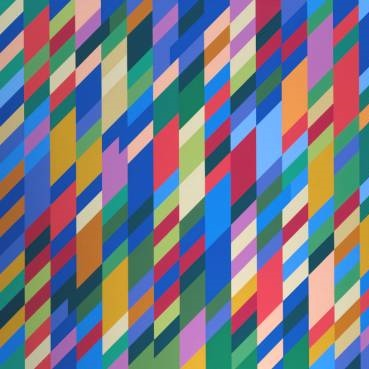
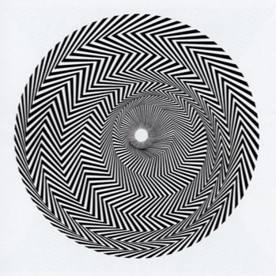
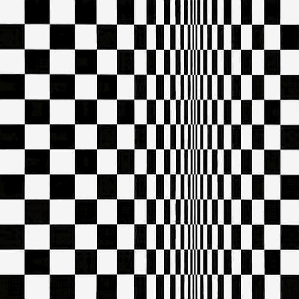
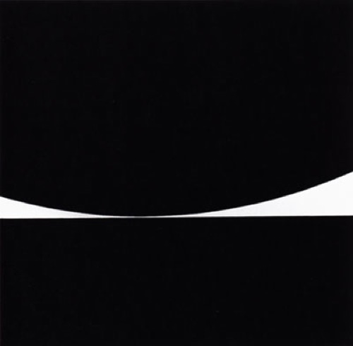
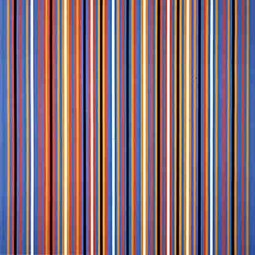

This project aims to use computer technology to generate images similar to those produced by Bridget Riley, but allow the computer user to adjust the parameters used to generate the images.
How to Use
Users can generate Op Art image based on different categories of shape pattern with given parameters as listed below:
Public Arguments
Transparency: set transparency for the image
Mode: set the image output format to PNG or SVG
Parallelogram

Colour pattern can be set to Random or Check.
Angle: inner angle of the parallelogram
Number of Stripes: total columns of parallelogram
Image Height: height of the image
Length of Each Parallelogram: set how long each parallelogram is in vertical
Stripe Width: width of each column of parallelogram
Blaze

Colour pattern can be set to Check.
Angle: the angle that evenly divides each sector
Circle Radius: list of circle radius
Circle Centres: list of circle centres
Angle Offset: the angle between the vertical direction and the centre of each circle centre to its starting point
Row: the row number to insert after
Double Quadratic

Colour pattern can be set to Random, Check or Gradient.
Minimum Width: minimum width of the shape at the valley
Maximum Width: maximum width of the shape at both ends
Valley Point: location of the valley
Column Number: total columns of the shape
Offset: a value that applies power to the width of each shape
Shape: type of shape to generate, can be set to Square, Dot or Parallelogram
Parallelogram
Parameter needs when the shape is set to Parallelogram.
Angle: inner angle of the parallelogram
Kiss

No colour pattern required.
Image Height: height of the image
Shape Base: distance of the base to the top of the image
Kiss Point: x value of the gap located
Curve (Quadratic Coefficient): quadratic coefficient for the curve
Narrowest Distance: width of the gap
Accuracy: the value of x increments when sampling the curve
Waves
No colour pattern required.
Image Width: width of the image
Amplitude: amplitude of the sine wave
Period: period of the sine wave
Vertical Offset: vertical offset of the sine wave, also the distance between waves
Horizontal Offset: horizontal offset of the sine wave, also the offset between top and bottom curves in one wave shape
Accuracy: the value of x increments when sampling the sine waves
Gradient Colour: colour of the gradient in the middle, can be set to Red, Green, Blue or any of the mixture between them
Stripes

Colour pattern can be set to Random.
Number of Stripes: total columns/rows of stripes
Orientation: can be set to Vertical or Horizontal
Shape: can be set to Normal, Binomial Distribution or Quadratic Formula:
Normal
Normal stripes pattern with random given colours.
Stripe Width: width of each stripe
Colour Weights: the weights of possibilities to randomly choose each given colour
Binomial Distribution
Gradually increase the width of stripes to the middle using binomial distribution.
Gap Width: gap between stripes
Maximum Stripe Width: maximum width for the stripes in the middle
Amplitude: value to scale up widths
Quadratic Formula
Gradually increase the width of stripes to the middle using quadratic formula.
Gap Width: gap between stripes
Maximum Stripe Width: maximum width for the stripes in the middle
Minimum Stripe Width: minimum width for the stripes at both ends
Colour Pattern
Can be set to Random, Check or Gradient based on various shape patterns.
Random
Adjacent Probability: probability to generate colours adjacently (and zebra pattern)
Adjacent Numbers: list of number of shapes that have adjacent colours
Zebra Pattern Numbers: list of number of shapes that repeat in a zebra pattern
Check
No parameters needed, just black and white.
Gradient
Gradient Delta: strength of the gradient
Gradient Point: location of the gradient stripe
Gradient Width: width of the gradient stripe
Animator
The animator is temporarily only available in the Double Quadratic shape pattern.
Animator: toggle on and off the animator
Total Images: total number of images generate and playback in sequence
Interval (s): time interval between playback of each image in seconds
Changing Variables: the parameters that is selected to change in the sequence incrementing by a given step value from users
Abstract
Optical Art, also known as Op Art, is a genre of visual art specifically uses optical illusions to create bizarre artistic effects. Usually op arts are made by artists using periodic arrangement of lines, shapes, colours, etc. By applying optical effect to a flat picture, it can trick viewers' eyes into thinking it is three-dimensional.
Op Art became extremely famous and popular in the 1960s. People used them as design for their clothes, CD covers, houses and so on. Op Art had even been adapted as a television commercial back then.
Regardless of op art being well-known centuries ago, it is still a magnificent form of art bringing vibrant effect and strong emotion to viewers. With the development of computing technology, digital art has become common to public, more and more people are willing to create their artwork using a computer rather by hand.
Despite of existing software that works in artistic aspects, lack of simplicity and professional focus makes Op Art artists difficult to plan and design their artwork based on computer. Therefore, there has been a high demand on designing such program that could aim better on Op Art and give better inspirations to those who work in this aspect.
This help guide introduces the development and evolution of an Op Art Generator program which help attracting the interest in Op Art from people and giving better understanding in Op Art for professional artists.
Usage
The program aims on helping users in following scenarios:
For users who would like to get a basic knowledge of what op art is and play around with the generated image.
For art learners and students to study with op art, especially artworks from Bridget Riley.
Generate and adjust shapes and patterns of the artwork for professional artists who want to get inspirations and ideas when create their own optical illusion form of artworks.
Save the op art image to make further use and process.
Advantages
Compare to traditional hand-drawing form of op art creation, the op art generator program has following advantages:
It generates artworks in almost no time and is way faster.
Users can treat the program as a draft creator and plan for their artwork in advance.
Its artwork can be saved and stored in local files in digital form, convenient to transfer or share.